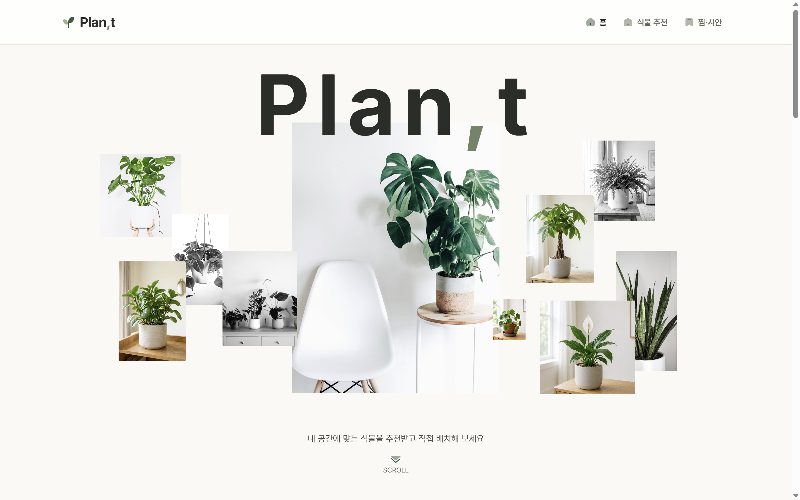
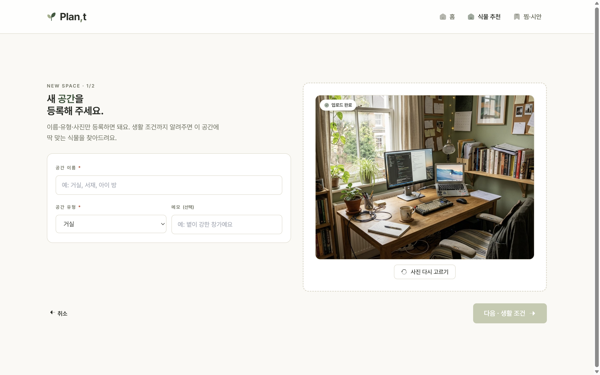
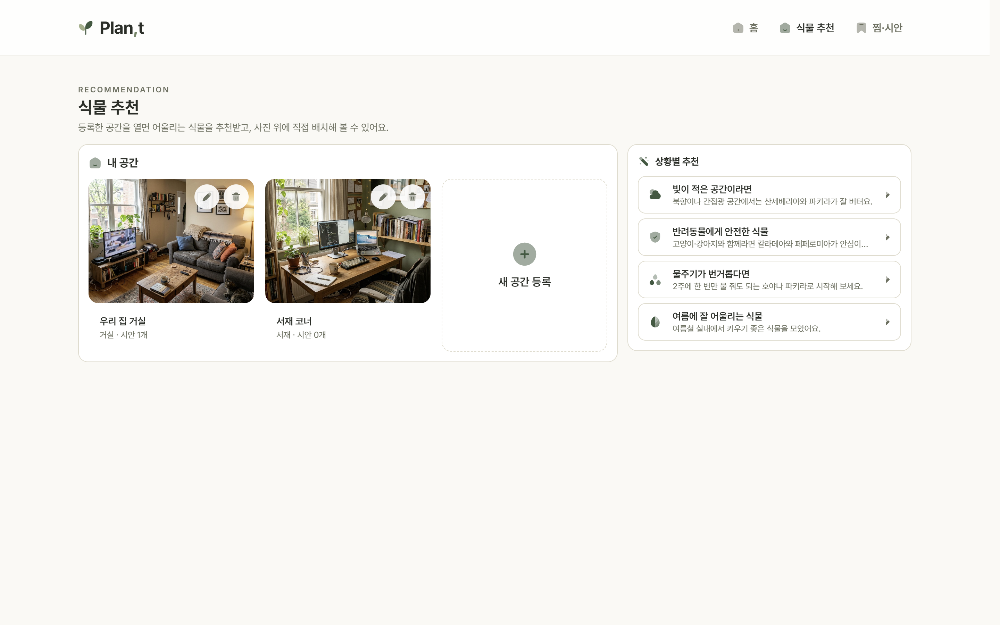
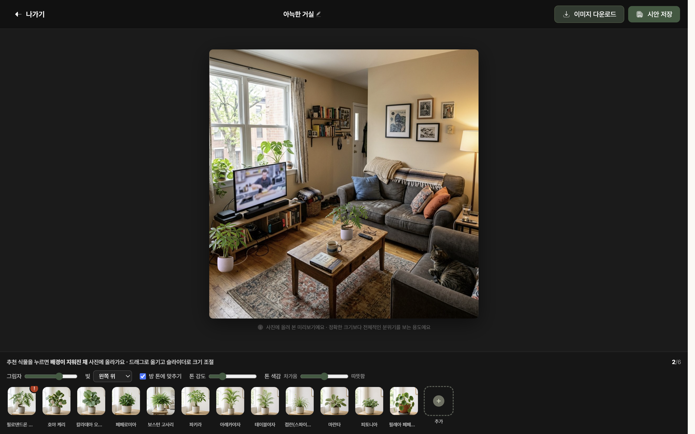
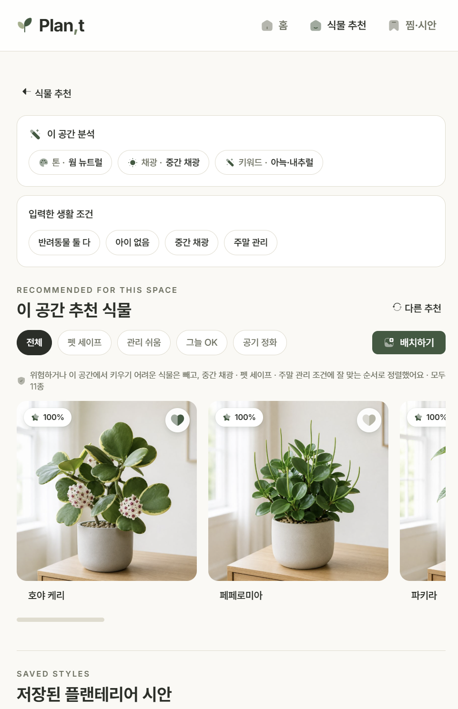
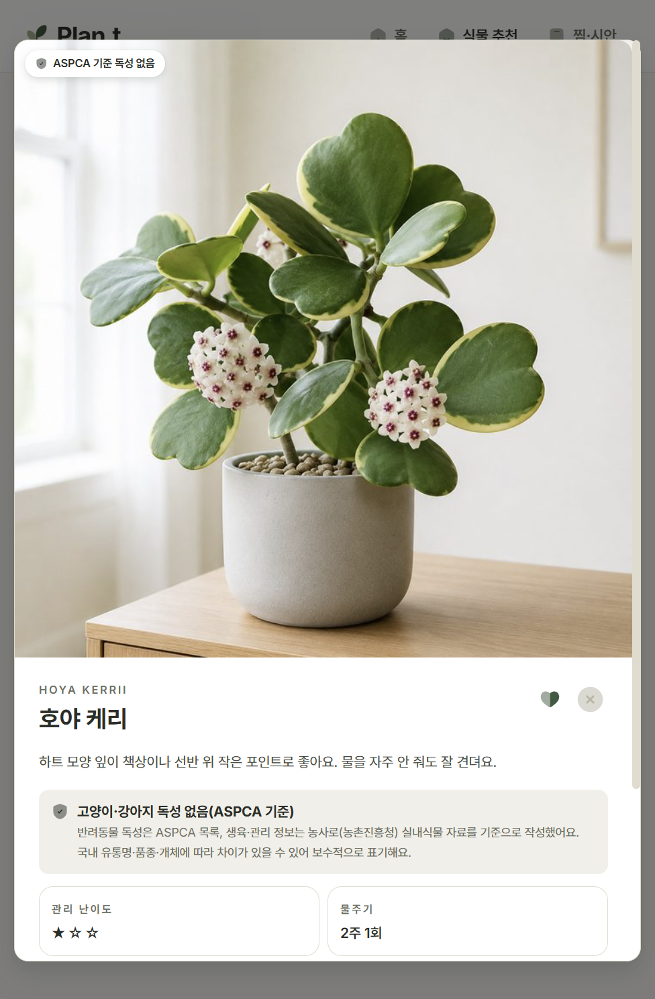

기능적 가치
공간·생활 조건 기반 추천
반려동물 안전성은 필수 조건
UX · Service Design Case Study
Plan,t — 우리 집 환경과 생활 조건에 맞는 식물을 추천하고, 그 식물을 공간 사진 위에 직접 올려 보며 플랜테리어(식물로 집 꾸미기)를 계획하는 공간 기반 서비스.
기존 식물 추천이 식물 자체에 집중했다면, Plan,t는 공간을 중심에 두고 식물 고르기부터 배치까지를 한 흐름으로 잇습니다.
핵심 한 문장
사용자는 식물을 찾고 싶은 게 아니라, 실패 없이 플랜테리어를 완성하고 싶다.
이 서비스가 주는 가치
기능적 가치
반려동물 안전성은 필수 조건
정서적 가치
"우리 집에서 살 수 있을까" 해소
경험 가치
내 공간 사진 위에서 배치
차별점
추천과 시뮬레이션을 한 흐름으로
시장 기회
플랜테리어 시장 성장
1·2인 가구 증가와 홈스타일링 문화 확산
반려식물 문화
장식품이 아니라 함께 사는 존재로
펫테리어 수요
반려동물 안전을 고려한 환경 설계에 대한 관심
시뮬레이션 소비
구매 전에 미리 보고 결정하는 소비 흐름
경쟁 분석 · 차별화
| 기능 | 오늘의집 | Plant | PictureThis | Plan,t |
|---|---|---|---|---|
| 공간 환경 기반 식물 추천 | ✕ | △ | ✕ | ✓ |
| 배치 시뮬레이션 (식물) | ✓ | ✕ | ✕ | ✓ |
| 반려동물 안전 필터 (필수 조건) | ✕ | ✕ | △ | ✓ |
| 추천 → 배치 통합 흐름 | ✕ | ✕ | ✕ | ✓ |
사용자 인사이트
출처 · 트렌드모니터 「반려식물 관련 인식 조사」, 엠브레인 트렌드모니터 2025식물 가꾸기는 이제 취미를 넘어, 공간을 꾸미고 마음을 다독이는 일상이 됐다. 사용자는 식물을 사는 게 아니라 더 나은 공간과 정서적 만족을 기대한다.
44.1%
현재 집에서 식물을 키움 (경험자 85%+)
58.3%
공기정화 — 식물을 키우는 가장 큰 이유
36.6%
인테리어 목적 (식물 자체 관심 38.6%)
44.0%
"집안 분위기가 밝아졌다" — 기쁨 43.8% · 힐링 38.4%
대표 사용자 · Persona
직장인 · 1인 가구 · 반려묘 1마리
"예쁜 식물은 많은데, 우리 집에서 살 수 있을지 — 그리고 고양이한테 안전한지를 모르겠어요."
조사에서 드러난 진입장벽이 아래 5가지 어려움(Pain Point)으로 이어지고, 각 어려움은 그것을 푸는 기능과 바로 연결됩니다.
우리 집 환경에 맞는 식물을 알기 어렵다. → 공간 기반 추천
관리 실패가 두렵다. → 난이도 맞춤 추천
반려동물에게 위험한 식물을 구분하기 어렵다. → 안전 필터(필수)
배치한 모습을 상상하기 어렵다. → 배치 시뮬레이션
구매 전 확신을 얻기 어렵다. → 통합 추천·배치 플로우
우리가 발견한 단 하나의 사실
사용자는 식물을 찾고 싶은 게 아니라,
실패 없이 플랜테리어를 완성하고 싶다.
지금까지 (AS-IS)
콘텐츠 발견 → 식물 탐색 → 적합성 고민 → 난이도 고민 → 구매 보류·포기
Plan,t를 쓰면 (TO-BE)
공간 진단 → 추천(사유 카드) → 상세 → 배치 → 확신 있는 결정
Problem Statement
플랜테리어에 관심 있는 사용자는 적합한 식물을 고르고 싶어하지만, 공간 적합성·안전성·관리 난이도를 판단하기 어려워 구매와 계획에 어려움을 겪는다.
우리가 어떻게 하면? · How Might We
공간에 맞는 식물을 쉽게 찾도록 도울 수 있을까?
구매 전에 공간 변화를 미리 경험하게 할 수 있을까?
선택 실패에 대한 불안을 줄일 수 있을까?
반려동물과 사는 사용자가 안전하게 선택하게 도울 수 있을까?
맨 위 메뉴는 홈 · 식물 추천 · 찜·시안 3개예요. 공간 등록과 배치는 따로 있는 메뉴가 아니라, '식물 추천' 과정과 화면 위에 뜨는 창(오버레이)으로 이뤄집니다.
전역 오버레이 · Overlay
— 어느 화면에서든 호출, 화면 전환 없이 흐름 유지무드보드
내 공간
사진·정보 1/2
우리 집 2/2
추천 매칭
이 공간 추천
공간 선택
시안 저장
추천 결과는 펫 세이프 · 관리 쉬움 · 저광 OK · 공기 정화 필터로 좁히고, '다른 추천'으로 다시 받을 수 있다.
식물 상세 · 배치할 공간 선택 · 식물 추가 · 배치 편집 · 시안 비교는 화면 전환 없이 오버레이로 동작하고, 등록한 공간 사진을 배치에 그대로 재사용한다.
키워드 Natural · Calm · Warm — '계획(Plan)'과 '결과로 자란 잎(Plant)'을 한 형태에 담는다.
Wordmark · 글자 로고
Symbol · 그림 로고 — 잎 2장 + 줄기
v10 적용 — 라이트(Paper) 표면만 사용
※ 반전(딥 배경)·세이지 배경 락업은 디자인 시스템에 정의돼 있으나 v10 본문에는 적용되지 않습니다.
브랜드 그린
Forest
#3A5A40 · Primary·CTA
Forest Deep
#283D2C · press
Green Mid
#6F8565 · 쉼표
Sage
#A3B18A · 보조
Sage Soft
#C4CBAE · 비활성
면 · 라인
Paper
#FAF9F5 · 배경
Paper-2
#F2EFE8 · soft·hover
Strong
#E8E3D6 · 강한 면
Line
#E1DCCE · hairline
Green Tint
#E8EDE1 · 선택·활성
텍스트 · 상태
Ink
#2A2E27 · 제목·본문
Body
#4A4E43 · 본문
Mute
#6C705F · 보조
Border
#B7B5A4 · 비활성 선
Error
#C13515 · 오류·필수
원칙 · 그린 계열을 면적 70%로(Forest를 CTA·활성·배지에 전면) · 콘텐츠 카드=투명, 구조적 면만 White+hairline · 그림자는 포레스트 틴트 · 의미색은 Error만. — Clay·Clay Soft·Mist는 토큰만 정의되고 v10에 적용되지 않아 제외했습니다.
Aa
Inter · Pretendard
영문·숫자는 Inter, 한글은 Pretendard. letter-spacing −0.01em, word-break: keep-all.
Type Scale
Iconify — Solar의 bold-duotone 스타일로 통일. 둥근 형태가 Natural·Calm 톤과 맞고, 듀오톤 면이 Sage와 어울린다.
실제 서비스 웹의 핵심 화면이에요. 같은 디자인 시스템으로 데스크탑과 모바일에 반응형으로 대응합니다.
데스크탑 · 핵심 흐름




모바일 · 반응형

추천 결과

식물 상세
직접 눌러 보는 시제품 · Live Prototype
공간 등록 → 진단 → 추천(사유 카드) → 배치 시뮬레이션 → 찜·시안 저장까지 실제로 동작합니다. 아래 링크를 새 탭에서 열어 직접 눌러 보세요.
▸ https://kimye2121.github.io/planty-app/